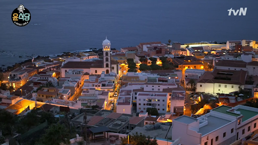

MOVIES YOU SHOULD WATCH
“Travelling is not just about exploring newer stretches of land, sea, and mountains but also about recollecting events that became significant in the world’s existence.”
"
Austria
"
The Sound Of Music (1965)
영화 제목만 들어도 OST가 자동 재생되는 고전 영화, 사운드 오브 뮤직의 실제 촬영 배경지는 오스트리아 입니다. 오스트리아의 잘츠부르크는 '사운드 오브 뮤직 투어'가 있을 정도로 많은 촬영지 들이 있습니다. 마리아와 아이들이 페가수스 동상 밑에서 ‘도레미송’을 부르던 미라벨 정원과 폰 트랩가의 저택으로 사용된 레오폴트스크 궁전, 그리고 헬브룬 궁전, 논베르크 수도원, 몬드제 대성당 등 영화의 주요 장면에 등장한 장소들을 직접 만나볼 수 있습니다.
아쉽게도 이번 여행에서는 시간관계 상 비엔나 밖에 여행하지 못했지만 오스트리아에 다시 간다면 꼭 방문해보고 싶은 장소입니다.
Before Sunrise (1995)
두 사람이 난간에 기대어 비엔나 오페라 극장의 야경을 감성하던 곳이 바로 알베르티나 박물관의 2층 테라스입니다. 2층 테라스만큼은 전시 관람권 없이도 자유롭게 머물 수 있는 곳이라고 하는데요. 알베르티나 박물관은 요금을 낸 뒤 입장해야 하며, 마리아 테레지아 여제의 사위인 알버트 공작의 수집품을 기반으로 1776년 설립된 박물관이라고 합니다.
박물관 앖 커다란 동산은 두 사람이 헤어지기 전 마지막으로 아츰 햇살을 맞으며 사랑을 속삭이던 장소입니다.
이 아름다운 영화의 배경이 된 오스트리아 비엔나에는 지금도 <비포 선라이즈>의 흔적을 따라 영화의 여운을 느끼려는 여행객이 많이 찾아옵니다. 이 외에도 비엔나 서역, 도나우 강, 프라터 공원의 관랍차 등 많은 영화 촬영지가 있습니다.
"
Croatia
"
Avatar (2009)
영화 <아바타>에 나온 풍경 기억하시나요? 바로 그 자연경관이 이 플리트비체를 배경으로 만들어진 곳이에요. 그만큼 아릉다워서 영화감독에게 영감을 준 곳이기도 하죠! 플리트비체는 세계문화유산으로 등재되어 있으며 호수와 울창한 숲, 폭포를 보며 트래킹을 할 수 있습니다.
저의 경우에도 여행계획을 세울 때 빼놓을 수 없던 곳인데요, 날씨도 좋았고 여러모로 너무나 아름답고 만족스러웠던 여행이었습니다. 가시기 전에 꼭 온라인예매하고 가는거 잊지마세요!
Mamma Mia! Here We Go Again (2018)
다채로운 색감을 나타내는 그리스마켓 가끔 등장하는데 이 마켓은 사실 그리스가 아니라 비스섭입니다. 크로아티아의 비스섬은 작고 평화로운 섬이지만, 비스섬에서 조망하는 아드리아해의 코발트 빛 바다는 그 어느 해안가 풍경보다 아름답습니다.
300명이 함께한 Abba 노래의 엄청난 퍼포먼스는 Barajaci라는 곳에서 촬영되었습니다.이 곳은 거의 모든 장면의 해변 장면이 촬영된 곳입니다. 이 영화를 위해 새로운 길이 들어서기도 했다고 합니다. 영화를 보니 휴양지로 딱일 것 같네요!
꽃보다 누나 (2013)
'꽃보다 누나'로 깊은 인상을 남긴 두브로브니크는 '아드리아해의 진주'라고 불리며 유럽에서도 꼽히는 아름답고 청정한 해안도시입니다. 아쉽게도 두브로브니크까지 갈 수는 없었지만 이 곳에 가면 제일 먼저 해야될것은 성벽투어FMF 하는 것입니다. 사진에서 보는 것과 같은 붉은 벽과 지붕을 감상할 수 있을 것입니다.
두브로브니크 외에도 다른 크로아티아의 예쁜 도시들이 나왔습니다.‘달마티아의 황홀한 꽃’이라 불릴 만큼 환상적인 풍경을 선사하는 스플리트는 로마 유적이 고스란히 남아 있는 곳으로, 크로아티아에서 두 번째로 큰 도시이자 아드리아 해안에서 가장 큰 지역입니다. 크로아티아 남부는 담에 크로아니아를 여행한다면 꼭 가보고 싶은 곳입니다.
"
Denmark
"
The Little Mermaid (1989)
코펜하겐을 상징하는 작은 인어상은 안데르센의 동화 인어공주에서 영감을 얻어 1913년에 만들어졌습니다. 인어상은 덴마크의 유명 발레리나를 모델로 하여 에드바르드 에릭센에 의해 만들어졌습니다.
"
England
"
Harry Potter (2001~2011)
영국에는 정말 많은 해리포터 촬영지가 있지만 그 중 매 편에 등장하는 곳이 바로 대연회장으로 나온 옥스스퍼드 크라이스트 칼리지 입니다.
해리포터의 9와 3/4 승강장이 있는 킹스 크로스 역입니다. 사실 촬영지는 킹스크로스역 탑승장이라 티켓팅을 해야만 볼 수 있지만, 수많은 관광객들을 위해 다른 곳에 포토존을 마련해 두었습니다.
Notting Hill (1999)
1999년 줄리아 로버츠와 휴 그랜트가 열연한 영화 <노팅힐>로 우리에게 더욱 친숙해진 이곳은 2km에 걸쳐 2,000개 이상의 가게들이 펼쳐지는 런던 최대의 시장이 서는 곳으로 유명하다. 포토벨로 거리에는 일용 잡화, 은제품이나 도자기, 골동품, 액세서리를 비롯한 먹거리와 볼거리를 제공하는 벼룩시장 포토벨로 로드 마켓(Portobello Road Market)이 선다.
평소에는 일대가 한적한 반면, 장이 서는 토요일에는 하루 종일 관광객과 업자들로 더욱 활기를 띤다.계속 걸어가면 헌옷을 비롯한 잡동사니, 액세서리, 민속품 등을 파는 상점이 나온다. 영화에 나온 윌리엄 데커(휴 그랜트)가 운영하는 서점 ‘The Travel Bookshop’은 아쉽게도 가구점으로 바뀌었다.
About Time (2013)

콘월은 어바웃 타임 쵤영지로 유명합니다. 아버지와의 "A quick little walk"까지 해서 하나같이 포근했던 바닷가 씬들은, 고향집 바로 앞 포스피언 비치 대신 8마일 더 떨어진 볼트(Vault)비치라는 곳에서 찍었습니다.
결혼식 장면이 배겨잉 되었던 '포틀로 유나이티드 교회'는 <어바웃 타임>을 감명 깊게 봤다면 반드시 들러야 할 명소로 자리잡았습니다. 외관은 소박하고 아담하지만, 그 안에 수많은 이야기들을 품고 있을 것 같은 교회입니다.
The Holiday (2006)
이곳 Shere는 주변 지역에서 작고 아름다운 시골마을로 알려져 있지만 무엇보다 'The Holiday' 영화의 촬영지로 유명해졌습니다. 이 영화를 정말 좋아하는 사람으로서 여기 꼭 가보고 싶었는데 기회가 되서 가볼수 있었습니다. 정말 자연과 어울러진 시골 마을이 너무 아름다웠고 행복했습니다.
"
France
"
Moulin Rouge (2001)
물랭 루주(프랑스어: Moulin Rouge; 빨간 풍차)는 1889년에 만들어진 파리 몽마르트르에 있는 카바레이다. ‘빨간 풍차’라는 뜻의 이름은 건물 옥상에 있는 빨간 풍차 장식 때문에 붙여졌다. 물랭 루주는 프랑스 근대 유흥 문화의 상징으로 여겨지며, 지금까지 많은 관광객들이 찾는 관광 명소가 되었다.
Ratatouille (2007)
중간중간 나오는 파리의 모습은 정말 지금봐도 너무 아릅답습니다. 애니메이션이지만 파리에 있을 때가 생각이 나고 돌아가고 싶게 만드는 장면입니다.
Midnight In Paris (2011)
이 장면들은 영화 시작 5분에 나오는 장면들입니다. 파리의 곳곳을 비춰주는데 정말 실제로 가서 본것보다 파리를 더 잘 묘사한거같습니다. 파리는 정말 강강추에요!
The Little Prince
어린왕자는 프랑스를 대표하는 생텍쥐베리의 작품이죠. 프랑스를 돌아다니면서 곳곳에 어린왕자 기념품가게들을 구경할수 있습니다.
"
Hungary
"
Gloomy Sunday (1999)

"
Portugal
"
Harry Potter (2001~2011)

포르투 여행은 관광스폿이 많지않아 부담없이 다녀올 수 있지만 조앤롤링이 해리포터의 영감을 받은 곳으로 유명한 곳이자 세계에서 가장 아름다운 서점 중 한곳인 렐루서점 만큼은 빼놓을수가 없었다.
해리포터 시리즈에 등장하는 마법학교 '호그와트' 학생들은 펄럭이는 검은색 망토를 교복으로 입습니다. 작가 조앤 K.롤링이 포르투갈 '코임브라'대학 전통 교복에서 영감을 받았다고 합니다.
Night Train to Lisbon (2013)
이 곳은 리스본에서 알파마지구를 여행하면 나오는 풍경입니다. 28번 트램을 타고 언덕을 돌아다니다보면 구시가지의 알록달록한 건물들과 아름다운 풍경들을 볼 수 있습니다.
"
Spain
"
Vicky Cristina Barcelona (2008)
이 영화는 바르셀로나의 풍경을 정말 잘 담아낸 영화입니다. 아름다움과 정열의 색감, 이국적이고 화려하지만 소박미까지 담고 있는 바르셀로나의 풍경은 영화의 매력을 증폭시키며 관객들의 마음을 사로잡습니다. 바르셀로나에 몇 일 있어봤지만 이 영화를 보면 안 가본 곳이 많은 것 같습니다.
알함브라 궁전의 추억 (2018)
그라나다의 메인 관광지는 알함브라 궁전입니다. 워낙 인기가 있는 곳이라 티켓예매는 필수입니다. 저는 가보진 못했지만 스페인에서 만난 많은 사람들이 그라나다에 갈 예정이거나 갔다왔다고 합니다.
윤식당2 (2018)

가라치코(스페인어: Garachico)는 스페인 산타크루스데테네리페 주에 위치한 테네리페 섬의 작은 마을입니다. 1년 내내 10~ 20도 사이의 짜쯧하고 온화한 기후 유지 등 휴양지로서의 조건을 갖추고 있어 유럽인들이 많이 찾는 여행지라고 합니다.
"
Sweden
"
A man called Ove (2015)
이 영화는 스웨덴을 배경으로 했습니다. 스웨덴에 오래 머물러 본 사람으로서 정말 스웨덴 특유의 마을 분위기와 모습들이 잘 드러났습니다.
Let The Right One In (2008)

스웨덴을 배경으로 한 이 영화는 스웨덴의 설원을 잘 묘사한 영화입니다. 아쉽게도 제가 스웨덴에 있을 때는 눈이 펑펑오지 않아 설원을 보기는 힘들었네요..